This week, we worked on creating circuits in several different way, as well as learning about electronic componnents in general.
We created circuits through both breadboards and soldering. This was a really cool week for me because I previously understood
very little about electronics, and it is nice to have a slightly deeper understanding now of something that makes up so much of
our everyday lives.
Assignment 1: Breadboard Circuits
For this assignment, we were given a book of circuits we could create. We needed to complete 15 of them. I completed numbers
3, 4, 6, 7, 8, 9, 10, 11, 12, 13, 14, 16, 17, 19, and 29. Below are the pictures
of my completed circuits.
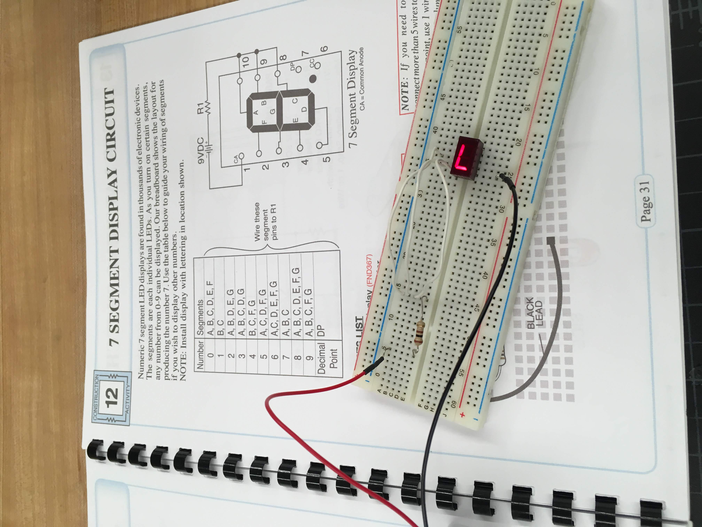
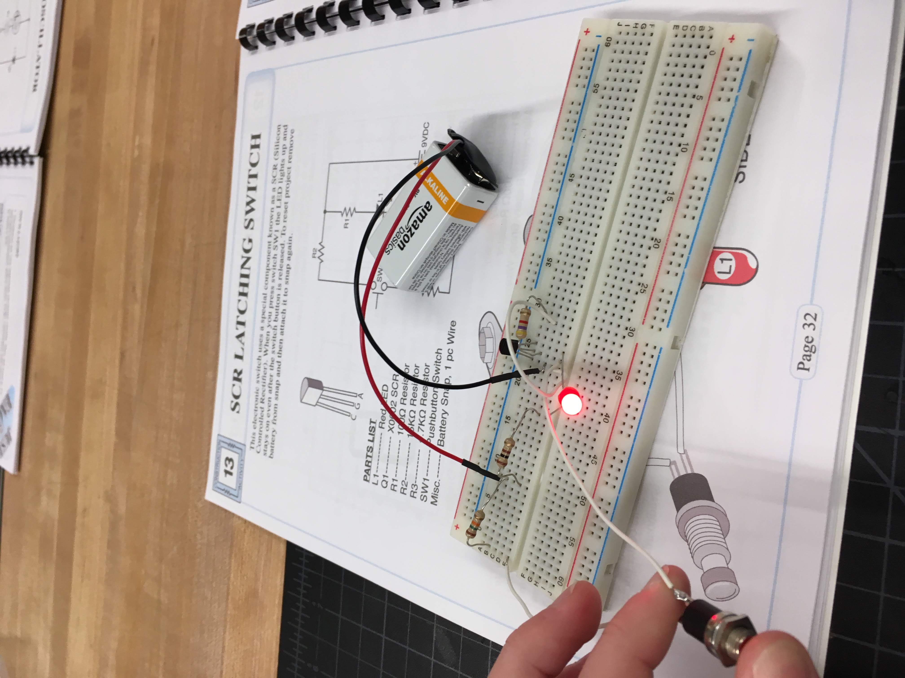
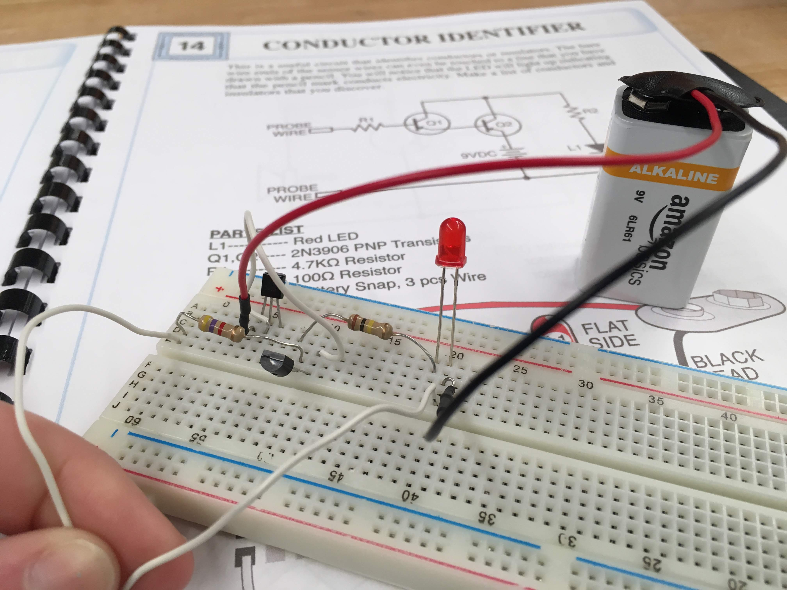
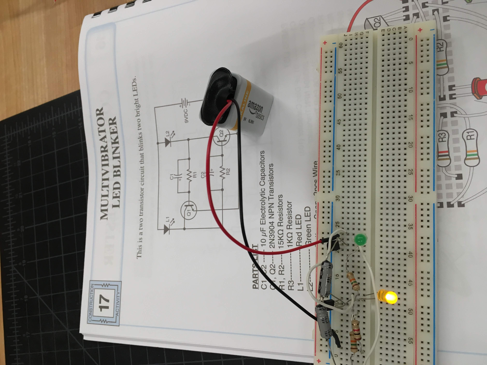
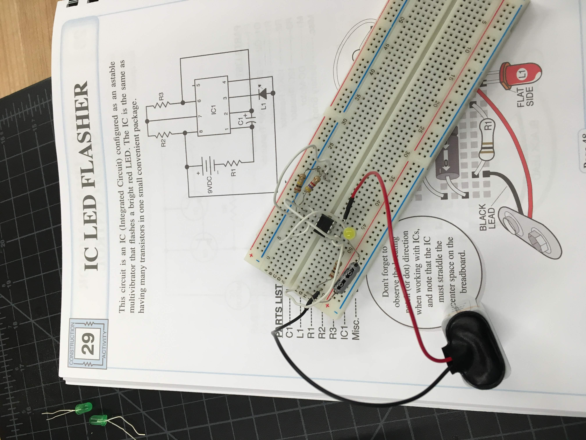
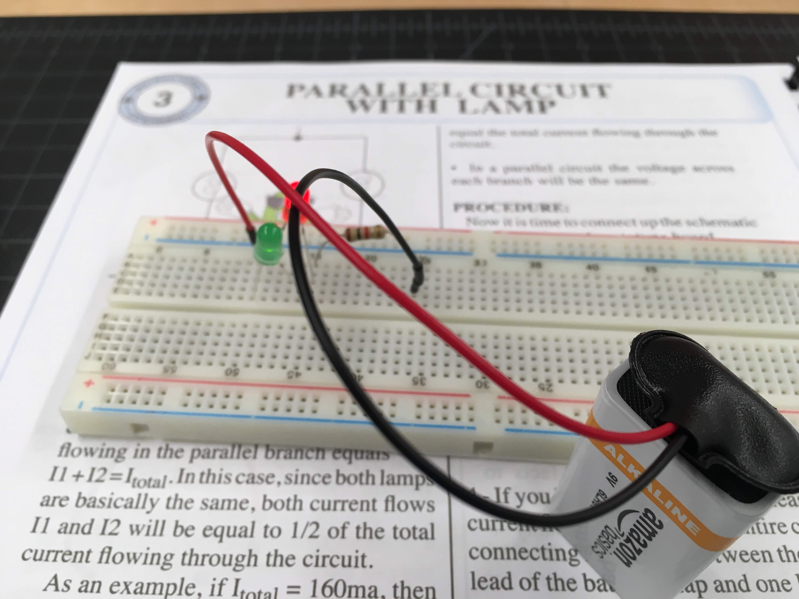
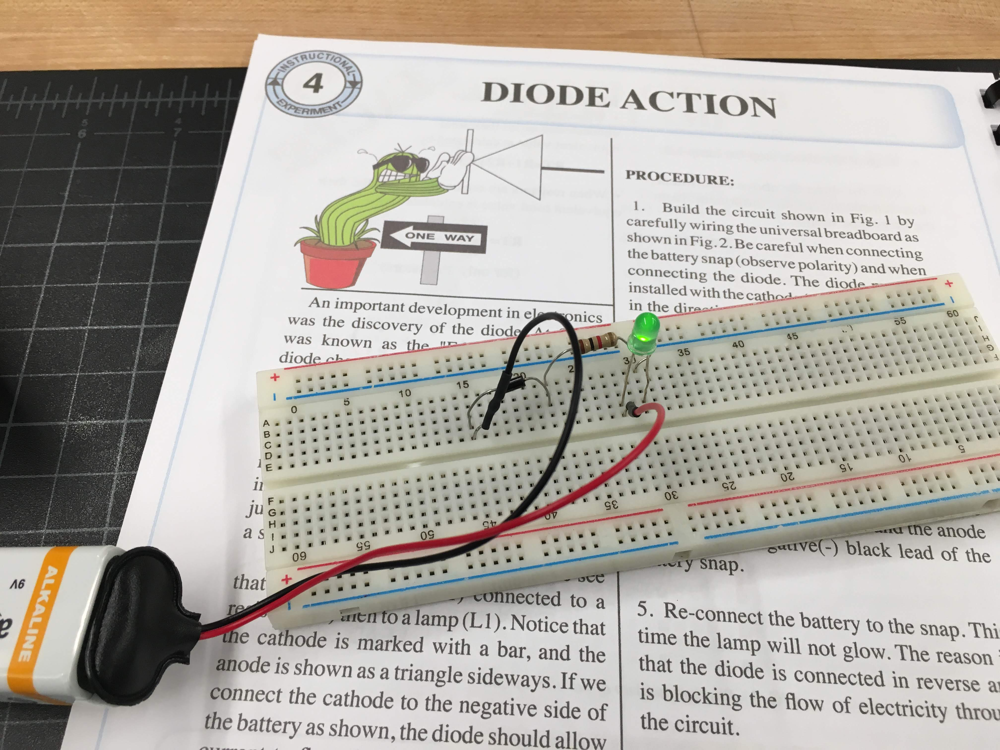
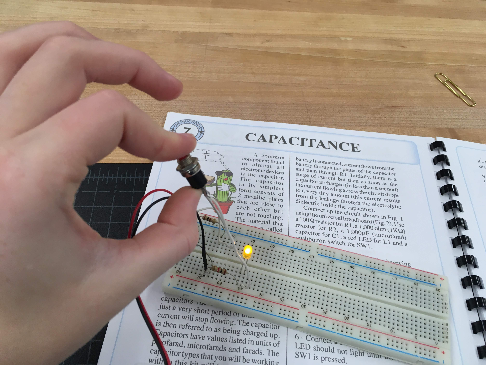
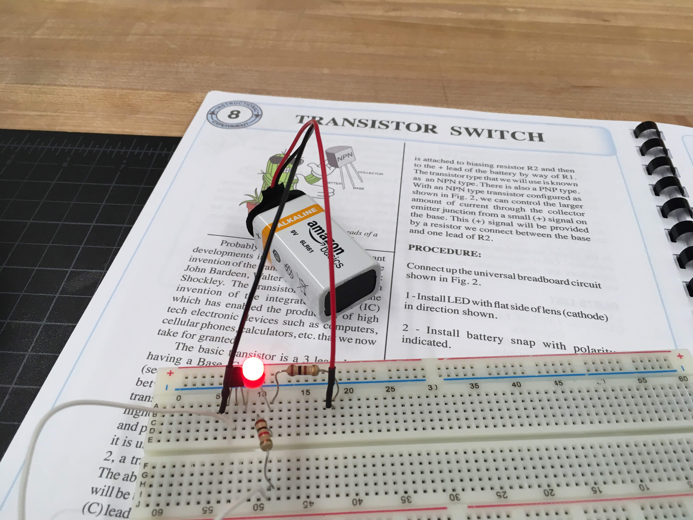
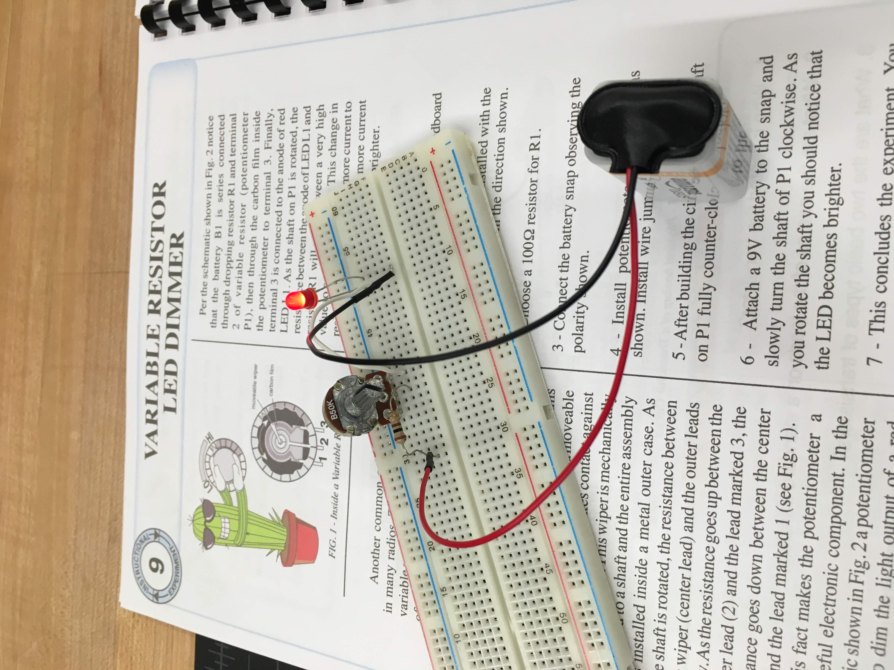
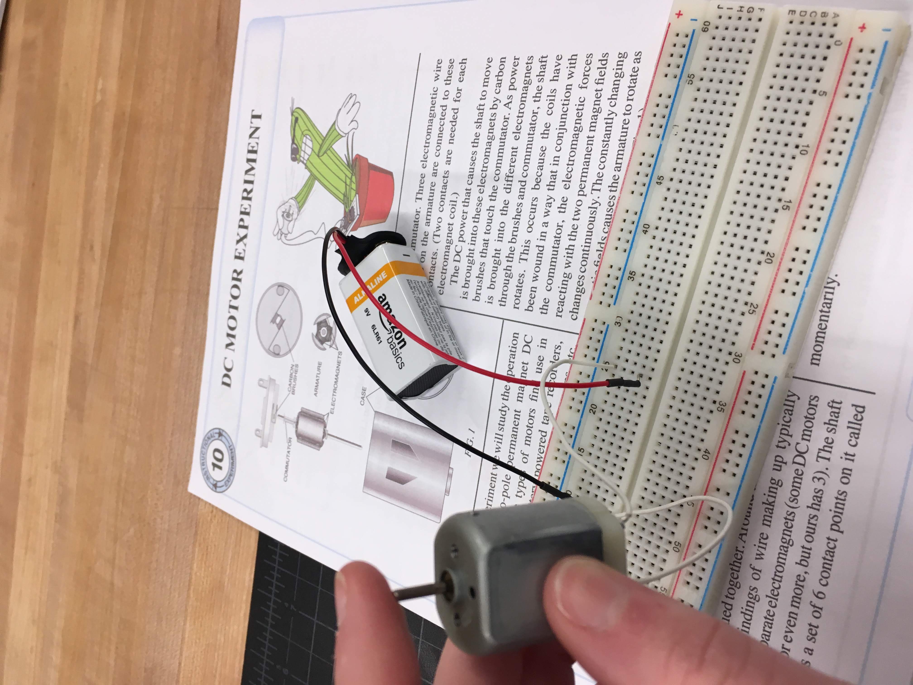
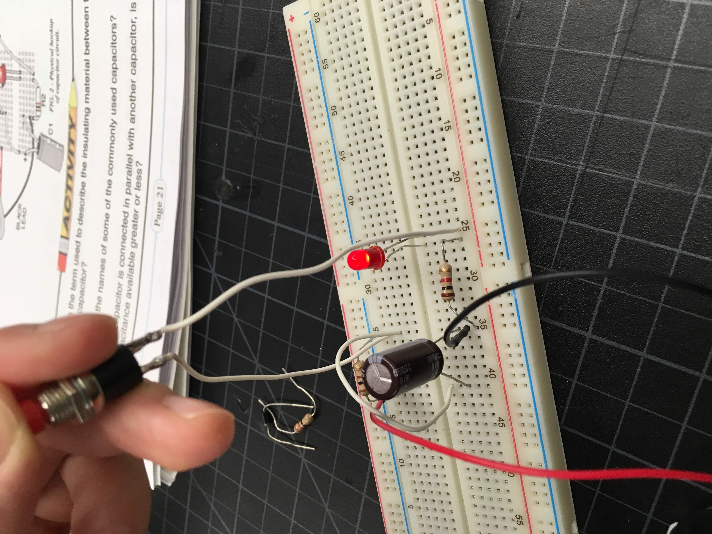
This week, we also learned about the parts of a circuit. A capacitor is like a temporary battery. It stores electricity, then
when there is a dip in the flow, it realeases it in order to ensure a steady stream. A transistor takes in a small current and
amplifies it. Resistors resist and reduce the flow of current. LEDs are diodes which produce light. Diodes are polarized componnents,
so electricity can only flow thruogh them in one direction. They also cause the voltage of a current to drop. A potentiometer
is a variable resistor, so you can manually change how much resistance it gives. A breadboard is a tool for creating circuits
without halving to solder or twist anything. A multimeter is a device that can measure current, voltage, and resistance. A
switch is any of a variety of componnents which are used to manually change a current from open to closed and vice versa.
We also learned that voltage is like the power of the electrical charge. Current is the speed of the charge. Resistance is the
amount that a given material resists the flow of electricity. Alternating current is a pulsing flow, where the electricity flows
first in one direction and then in the other. This is used for wall sockets in homes. Direct current is a steady flow of electricity
straight to ground. It is used in batteries.
Assignment 2: Soldering
In this assignment, we used kits to solder digital clocks. It was a very enjoyable and cathartic experience. I think I would
enjoy doing soldering again, if given the opportunity.